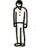
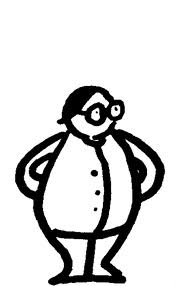
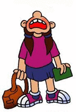

O Luís é patarraz, jorda curseiros à Manuel Fernandes, sempre
teodorinhos, e é sarnudo. Só os mirantes é que jordem a da borra dos
mirantes do seu ramo-figueiro. Os covanos que não penetrem nunca
piem que o António e o Luís são igualados, nem ramos-figueiros.
Moinho da fonte de engenho (Ficha de exercício)
O que mirantas nas alexandrinas?

1.

3.

5.
Separata do Jornal de Minde